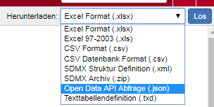

R Interface for the STATcube REST API. This package exposes certain parts of the SuperSTAR API to transfer your STATcube tables into R.
Note that the API is currently only available inside the firewall of Statistics Austria. Support for external users will be available in
Setup
See the setup article for instructions on how to install the package and set your API key.
Usecase: JSON-Request
In the following example, a table will be exported from STATcube into an R session. This process involves four steps
- create a table with the STATcube GUI (table view)
- download an “API request” for the table (format:
*.json). - send the
jsonfile to the API usingSTATcubeR. - convert the return value into a
data.frame
Create a table with the STATcube GUI
Use the graphical user interface of STATcube to create a table. Visit STATcube and select a database. This will open the table view where you can create a table. See the STATcube manual for details.
Download an API request
Choose “Open Data API Abfrage (.json)” in the download options. This will save a json file on your local file system.

Send the json to the API
Provide the path to the downloaded file in sc_post_json().
my_response <- sc_post_json("path/to/api_request.json")
The object my_response contains the raw API response from httr::post() against the /table endpoint. Printing the object will summarize the request.
(json_path <- sc_example("bev_seit_1982.json")) #> [1] "/data/home/decill/projects/STATcubeR/inst/json_examples/bev_seit_1982.json" my_response <- sc_post_json(json_path) my_response #> An object of class STATcube_response #> #> Database: Population at the beginning of the year since 1982 #> Measures: Number #> Fields: Time section, Bundesland, Country of birth #> #> Request: 2020-09-17 15:40:37 #> STATcubeR: 0.1.0
Convert into a data frame
The return value of sc_post_json() can be converted into a data.frame using the generic function as.data.frame().
as.data.frame(my_response)
This will produce a tidy table, which contains a column for each field of the table. Furthermore, two columns will be present for each measure
as.data.frame(my_response) %>% .[c(1:4, 19:24), ] #> Time section Bundesland Country of birth Number Number_a #> 1 2020 Burgenland <AT11> Austria 260354 #> 2 2020 Burgenland <AT11> Foreign country 34082 #> 3 2020 Carinthia <AT21> Austria 489262 #> 4 2020 Carinthia <AT21> Foreign country 72031 #> 19 2020 Not classifiable <0> Austria 0 #> 20 2020 Not classifiable <0> Foreign country 0 #> 21 1982 Burgenland <AT11> Austria NA X #> 22 1982 Burgenland <AT11> Foreign country NA X #> 23 1982 Carinthia <AT21> Austria NA X #> 24 1982 Carinthia <AT21> Foreign country NA X
The column Number_a contains annotations for the column Number. In order to get explanations about those annotations, use the function sc_annotation_legend().
sc_annotation_legend(my_response) #> $Q #> [1] "STATcube – Statistical Database of STATISTICS AUSTRIA" #> #> $X #> [1] "Crosstabulation not allowed"
In this case, we see that row 21 contains a value NA (Not Available) because the value is not disclosed (“Crosstabulation not allowed”). However, the zero value in row 20 can be considered a “real zero value” because no annotations are provided.
Usecase: Saved Table
If saved tables are present in STATcube, those can be imported without downloading a json file. All saved tables can be shown with sc_saved_tables_list().
sc_saved_tables_list() #> label id #> 1 ts_tourism str:table:cfc581ca-dd88-44e7-9ec2-cca153365dd5 #> 2 krankenbewegungen str:table:c7902e8d-5165-44e9-b17e-34ae20e2d1d4 #> 3 tourism_ts str:table:eec7dd70-25c4-4e5a-a6ae-1a9cd15d3c4c #> 4 entlassungen str:table:f63f0713-155f-4d1d-8d41-4a50f0815fc7
Subsequently the id of a saved table can be used to import the table into R.
tourism_ts <- sc_saved_table("str:table:eec7dd70-25c4-4e5a-a6ae-1a9cd15d3c4c") tourism_ts #> An object of class STATcube_response #> #> Database: Accomodation statistics as of 1974 according to seasons #> Measures: Nights spent #> Fields: Tourism commune [partly SPE], Season/Tourism Month, Country of origin #> #> Request: 2020-09-17 14:35:27 #> STATcubeR: 0.1.0
To make the table available for other users of STATcubeR, the response can be exported into a json.
sc_write_json(tourism_ts, "tourism_ts.json")
The generated json file contains an API request that can be used in sc_post_json().
my_response <- sc_post_json("tourism_ts.json")
Misc
To get the raw API response content, use sc_content(). This function returns a nested list, containing data and metadata about the table.
my_content <- sc_content(my_response) names(my_content) #> [1] "query" "database" "measures" "fields" #> [5] "cubes" "annotationMap" my_content$measures #> [[1]] #> [[1]]$uri #> [1] "str:statfn:debevstandjb:F-BEVSTANDJB:F-ISIS-1:SUM" #> #> [[1]]$label #> [1] "Number" #> #> [[1]]$measure #> [1] "str:measure:debevstandjb:F-BEVSTANDJB:F-ISIS-1" #> #> [[1]]$`function` #> [1] "SUM"
There is experimental support for the endpoints /info, /schema and /rate_limit. However, those endpoints are not exported by now.
STATcubeR:::sc_get_info() %>% httr::content() STATcubeR:::sc_get_schema() %>% httr::content() STATcubeR:::sc_get_rate_limit() %>% httr::content()
STATcube uses caching for the /table endpoint by default. If the same request to sc_post_json() is sent several times, this will not count towards the rate-limit (100 requests per hour).